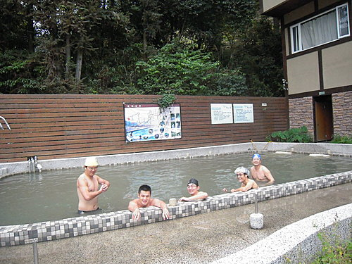

The more we shared, the more we laughed ,
teased and bonded.
台灣最美的公路（從合歡東峰遠眺昆陽至武嶺路段）
2008年河東獅車隊訂立了五年長征計劃，
即在五年內，
於每年春天來一次長程單車旅行，
目標即台灣最夯的單車路線：
環島+三橫（北橫，中橫，南橫）+一豎（新中橫）
2009年河東獅車隊以9天的時間，
完成了台灣環島共992公里 的旅程。
今年，
2010年大家選擇了中橫霧社支線+中橫東段，
此行的特色是—
挑戰公路最高點--武嶺（海拔3275M ）
迂迴騎乘於3千公尺 合歡群峰中，
並飽覽壯麗的太魯閣奇山峽谷景色。
本行由小紀隊長領軍的9位團員，
除了6位環島的伙伴外，
因lily美女加入挑戰—武嶺巔峰之旅，
更鼓舞了三位車隊新秀帥哥，
小鍾、祥哥及睿睿一同來參與盛會。
現在就讓我們帶你一同來領略--
奇山、溫泉、稜線公路、深壑峽谷的中橫之美……
在四天的騎乘日誌之前，
為嚮讀者，先來幾張精彩相片做為預告強打。
霧社(海拔1148M)—河東獅於莫那魯道紀念碑前小憩

天下第一泉--廬山溫泉
青青草原上悠閒的綿羊
巔峰戰士—豪哥於合歡北峰近小風口路段奮力向前
合歡東峰攻頂後振臂合影
祥哥於合歡群峰路段邁向克難坡
太魯閣峽谷

砂卡礑步道（你看到步道位置了嗎?答案見日誌4）
（待續）
參考資料：
99年春河東獅--中橫行程表（4日總里程共167公里）
|
|
早餐 |
行程 |
午餐 |
行程 |
晚餐 |
住宿 |
房型及間數 |
備註 |
|
3/17(週三)約35公里 |
自理 |
鳳山宿舍-搭車至埔里. 海拔200M |
埔里李仔哥餐廳 |
地里中心埤-獅子頭(觀音瀑布-霧社(26公里. 海拔1148M)-盧山 |
溫泉鄉餐廳合菜. |
盧山觀月山莊 |
4人房4間. 2人房2間 |
4人房住2人. 附泡湯 |
|
3.18(週四)約38公里 |
飯店早餐 |
盧山-清境-梅峰(21公里.海拔2100M) |
梅峰農場-合菜049-280-2499 |
梅峰--翠峰--鳶峰-昆陽-武嶺-松雪樓（約17公里） 海拔3275M |
飯店.個人套餐 |
合歡山松雪樓 海拔3150 |
2人房10間 |
2人房住1人 環保旅館 |
|
3.19(週五)約71公里 |
飯店早餐 |
松雪樓大禹嶺(14公里) 海拔約2565M |
欣欣餐廳合菜- |
觀雲山莊(6公里.海拔2374)慈恩-新白楊-洛韶-天祥(51公里) 海拔450M |
飯店合菜 |
天祥青年活動中心 |
2人房6間 鐵馬專案含早晚餐 |
環保旅館.自備盥洗包.
|
|
3.20(週六)約22公里 |
飯店早餐 |
天祥-綠水-九曲洞-錐麓斷崖-燕子口-太魯閣（20公里）-砂卡噹步道 |
達基力餐廳--太魯閣族風味餐(歌舞表演) |
蘇花公路—北宜高—土城—大溪-- 返回溫暖的窩 |
西螺休息站 |
約晚上10點回高雄 |
|
4日總里程約167公里 |